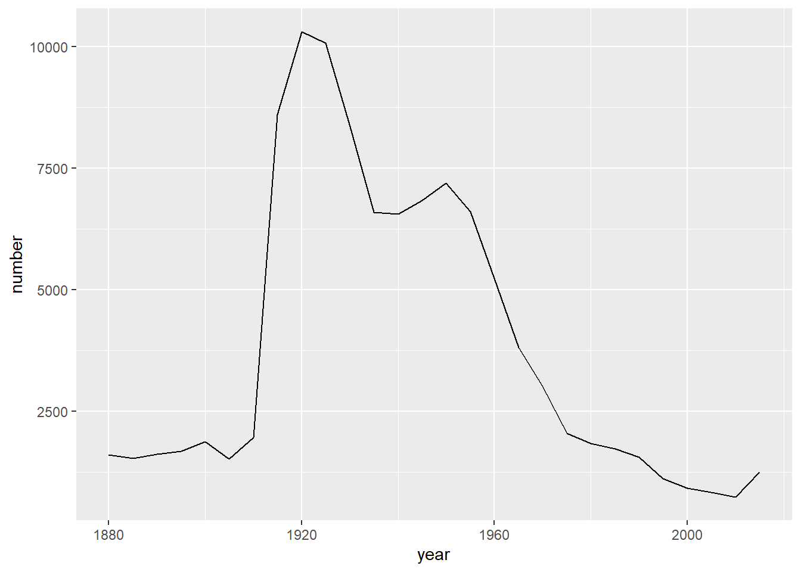

library(dplyr)
library(ggplot2)
counties <- readRDS(file = "datasets/counties.rds")glimpse(counties)## Rows: 3,138
## Columns: 40
## $ census_id <chr> "1001", "1003", "1005", "1007", "1009", "1011", "10…
## $ state <chr> "Alabama", "Alabama", "Alabama", "Alabama", "Alabam…
## $ county <chr> "Autauga", "Baldwin", "Barbour", "Bibb", "Blount", …
## $ region <chr> "South", "South", "South", "South", "South", "South…
## $ metro <chr> "Metro", "Metro", "Nonmetro", "Metro", "Metro", "No…
## $ population <dbl> 55221, 195121, 26932, 22604, 57710, 10678, 20354, 1…
## $ men <dbl> 26745, 95314, 14497, 12073, 28512, 5660, 9502, 5627…
## $ women <dbl> 28476, 99807, 12435, 10531, 29198, 5018, 10852, 603…
## $ hispanic <dbl> 2.6, 4.5, 4.6, 2.2, 8.6, 4.4, 1.2, 3.5, 0.4, 1.5, 7…
## $ white <dbl> 75.8, 83.1, 46.2, 74.5, 87.9, 22.2, 53.3, 73.0, 57.…
## $ black <dbl> 18.5, 9.5, 46.7, 21.4, 1.5, 70.7, 43.8, 20.3, 40.3,…
## $ native <dbl> 0.4, 0.6, 0.2, 0.4, 0.3, 1.2, 0.1, 0.2, 0.2, 0.6, 0…
## $ asian <dbl> 1.0, 0.7, 0.4, 0.1, 0.1, 0.2, 0.4, 0.9, 0.8, 0.3, 0…
## $ pacific <dbl> 0.0, 0.0, 0.0, 0.0, 0.0, 0.0, 0.0, 0.0, 0.0, 0.0, 0…
## $ citizens <dbl> 40725, 147695, 20714, 17495, 42345, 8057, 15581, 88…
## $ income <dbl> 51281, 50254, 32964, 38678, 45813, 31938, 32229, 41…
## $ income_err <dbl> 2391, 1263, 2973, 3995, 3141, 5884, 1793, 925, 2949…
## $ income_per_cap <dbl> 24974, 27317, 16824, 18431, 20532, 17580, 18390, 21…
## $ income_per_cap_err <dbl> 1080, 711, 798, 1618, 708, 2055, 714, 489, 1366, 15…
## $ poverty <dbl> 12.9, 13.4, 26.7, 16.8, 16.7, 24.6, 25.4, 20.5, 21.…
## $ child_poverty <dbl> 18.6, 19.2, 45.3, 27.9, 27.2, 38.4, 39.2, 31.6, 37.…
## $ professional <dbl> 33.2, 33.1, 26.8, 21.5, 28.5, 18.8, 27.5, 27.3, 23.…
## $ service <dbl> 17.0, 17.7, 16.1, 17.9, 14.1, 15.0, 16.6, 17.7, 14.…
## $ office <dbl> 24.2, 27.1, 23.1, 17.8, 23.9, 19.7, 21.9, 24.2, 26.…
## $ construction <dbl> 8.6, 10.8, 10.8, 19.0, 13.5, 20.1, 10.3, 10.5, 11.5…
## $ production <dbl> 17.1, 11.2, 23.1, 23.7, 19.9, 26.4, 23.7, 20.4, 24.…
## $ drive <dbl> 87.5, 84.7, 83.8, 83.2, 84.9, 74.9, 84.5, 85.3, 85.…
## $ carpool <dbl> 8.8, 8.8, 10.9, 13.5, 11.2, 14.9, 12.4, 9.4, 11.9, …
## $ transit <dbl> 0.1, 0.1, 0.4, 0.5, 0.4, 0.7, 0.0, 0.2, 0.2, 0.2, 0…
## $ walk <dbl> 0.5, 1.0, 1.8, 0.6, 0.9, 5.0, 0.8, 1.2, 0.3, 0.6, 1…
## $ other_transp <dbl> 1.3, 1.4, 1.5, 1.5, 0.4, 1.7, 0.6, 1.2, 0.4, 0.7, 1…
## $ work_at_home <dbl> 1.8, 3.9, 1.6, 0.7, 2.3, 2.8, 1.7, 2.7, 2.1, 2.5, 1…
## $ mean_commute <dbl> 26.5, 26.4, 24.1, 28.8, 34.9, 27.5, 24.6, 24.1, 25.…
## $ employed <dbl> 23986, 85953, 8597, 8294, 22189, 3865, 7813, 47401,…
## $ private_work <dbl> 73.6, 81.5, 71.8, 76.8, 82.0, 79.5, 77.4, 74.1, 85.…
## $ public_work <dbl> 20.9, 12.3, 20.8, 16.1, 13.5, 15.1, 16.2, 20.8, 12.…
## $ self_employed <dbl> 5.5, 5.8, 7.3, 6.7, 4.2, 5.4, 6.2, 5.0, 2.8, 7.9, 4…
## $ family_work <dbl> 0.0, 0.4, 0.1, 0.4, 0.4, 0.0, 0.2, 0.1, 0.0, 0.5, 0…
## $ unemployment <dbl> 7.6, 7.5, 17.6, 8.3, 7.7, 18.0, 10.9, 12.3, 8.9, 7.…
## $ land_area <dbl> 594.44, 1589.78, 884.88, 622.58, 644.78, 622.81, 77…counties %>%
# Select the columns
select(state,county,population,poverty)## # A tibble: 3,138 × 4
## state county population poverty
## <chr> <chr> <dbl> <dbl>
## 1 Alabama Autauga 55221 12.9
## 2 Alabama Baldwin 195121 13.4
## 3 Alabama Barbour 26932 26.7
## 4 Alabama Bibb 22604 16.8
## 5 Alabama Blount 57710 16.7
## 6 Alabama Bullock 10678 24.6
## 7 Alabama Butler 20354 25.4
## 8 Alabama Calhoun 116648 20.5
## 9 Alabama Chambers 34079 21.6
## 10 Alabama Cherokee 26008 19.2
## # … with 3,128 more rowscounties_selected <- counties %>%
select(state,county,population,unemployment,metro)
counties_selected## # A tibble: 3,138 × 5
## state county population unemployment metro
## <chr> <chr> <dbl> <dbl> <chr>
## 1 Alabama Autauga 55221 7.6 Metro
## 2 Alabama Baldwin 195121 7.5 Metro
## 3 Alabama Barbour 26932 17.6 Nonmetro
## 4 Alabama Bibb 22604 8.3 Metro
## 5 Alabama Blount 57710 7.7 Metro
## 6 Alabama Bullock 10678 18 Nonmetro
## 7 Alabama Butler 20354 10.9 Nonmetro
## 8 Alabama Calhoun 116648 12.3 Metro
## 9 Alabama Chambers 34079 8.9 Nonmetro
## 10 Alabama Cherokee 26008 7.9 Nonmetro
## # … with 3,128 more rowscounties_selected %>%
arrange(population)## # A tibble: 3,138 × 5
## state county population unemployment metro
## <chr> <chr> <dbl> <dbl> <chr>
## 1 Hawaii Kalawao 85 0 Metro
## 2 Texas King 267 5.1 Nonmetro
## 3 Nebraska McPherson 433 0.9 Nonmetro
## 4 Montana Petroleum 443 6.6 Nonmetro
## 5 Nebraska Arthur 448 4 Nonmetro
## 6 Nebraska Loup 548 0.7 Nonmetro
## 7 Nebraska Blaine 551 0.7 Nonmetro
## 8 New Mexico Harding 565 6 Nonmetro
## 9 Texas Kenedy 565 0 Nonmetro
## 10 Colorado San Juan 606 13.8 Nonmetro
## # … with 3,128 more rowscounties_selected %>%
arrange(desc(population))## # A tibble: 3,138 × 5
## state county population unemployment metro
## <chr> <chr> <dbl> <dbl> <chr>
## 1 California Los Angeles 10038388 10 Metro
## 2 Illinois Cook 5236393 10.7 Metro
## 3 Texas Harris 4356362 7.5 Metro
## 4 Arizona Maricopa 4018143 7.7 Metro
## 5 California San Diego 3223096 8.7 Metro
## 6 California Orange 3116069 7.6 Metro
## 7 Florida Miami-Dade 2639042 10 Metro
## 8 New York Kings 2595259 10 Metro
## 9 Texas Dallas 2485003 7.6 Metro
## 10 New York Queens 2301139 8.6 Metro
## # … with 3,128 more rowscounties_selected %>%
arrange(desc(population)) %>%
filter(state == "New York")## # A tibble: 62 × 5
## state county population unemployment metro
## <chr> <chr> <dbl> <dbl> <chr>
## 1 New York Kings 2595259 10 Metro
## 2 New York Queens 2301139 8.6 Metro
## 3 New York New York 1629507 7.5 Metro
## 4 New York Suffolk 1501373 6.4 Metro
## 5 New York Bronx 1428357 14 Metro
## 6 New York Nassau 1354612 6.4 Metro
## 7 New York Westchester 967315 7.6 Metro
## 8 New York Erie 921584 7 Metro
## 9 New York Monroe 749356 7.7 Metro
## 10 New York Richmond 472481 6.9 Metro
## # … with 52 more rowscounties_selected %>%
arrange(desc(population)) %>%
filter(unemployment<6) #6%## # A tibble: 949 × 5
## state county population unemployment metro
## <chr> <chr> <dbl> <dbl> <chr>
## 1 Virginia Fairfax 1128722 4.9 Metro
## 2 Utah Salt Lake 1078958 5.8 Metro
## 3 Hawaii Honolulu 984178 5.6 Metro
## 4 Texas Collin 862215 4.9 Metro
## 5 Texas Denton 731851 5.7 Metro
## 6 Texas Fort Bend 658331 5.1 Metro
## 7 Kansas Johnson 566814 4.5 Metro
## 8 Maryland Anne Arundel 555280 5.9 Metro
## 9 Colorado Jefferson 552344 5.9 Metro
## 10 Utah Utah 551957 5.5 Metro
## # … with 939 more rowscounties_selected %>%
arrange(desc(population)) %>%
filter(state == "New York",unemployment<6)## # A tibble: 5 × 5
## state county population unemployment metro
## <chr> <chr> <dbl> <dbl> <chr>
## 1 New York Tompkins 103855 5.9 Metro
## 2 New York Chemung 88267 5.4 Metro
## 3 New York Madison 72427 5.1 Metro
## 4 New York Livingston 64801 5.4 Metro
## 5 New York Seneca 35144 5.5 Nonmetrocounties_selected %>%
mutate(unemployed_population = population*unemployment/100) %>%
arrange(desc(unemployed_population))## # A tibble: 3,138 × 6
## state county population unemployment metro unemployed_population
## <chr> <chr> <dbl> <dbl> <chr> <dbl>
## 1 California Los Angeles 10038388 10 Metro 1003839.
## 2 Illinois Cook 5236393 10.7 Metro 560294.
## 3 Texas Harris 4356362 7.5 Metro 326727.
## 4 Arizona Maricopa 4018143 7.7 Metro 309397.
## 5 California Riverside 2298032 12.9 Metro 296446.
## 6 California San Diego 3223096 8.7 Metro 280409.
## 7 Michigan Wayne 1778969 14.9 Metro 265066.
## 8 California San Bernardino 2094769 12.6 Metro 263941.
## 9 Florida Miami-Dade 2639042 10 Metro 263904.
## 10 New York Kings 2595259 10 Metro 259526.
## # … with 3,128 more rowscounties %>%
count()## # A tibble: 1 × 1
## n
## <int>
## 1 3138counties %>%
count(state)## # A tibble: 50 × 2
## state n
## <chr> <int>
## 1 Alabama 67
## 2 Alaska 28
## 3 Arizona 15
## 4 Arkansas 75
## 5 California 58
## 6 Colorado 64
## 7 Connecticut 8
## 8 Delaware 3
## 9 Florida 67
## 10 Georgia 159
## # … with 40 more rowscounties %>%
count(state, sort = TRUE)## # A tibble: 50 × 2
## state n
## <chr> <int>
## 1 Texas 253
## 2 Georgia 159
## 3 Virginia 133
## 4 Kentucky 120
## 5 Missouri 115
## 6 Kansas 105
## 7 Illinois 102
## 8 North Carolina 100
## 9 Iowa 99
## 10 Tennessee 95
## # … with 40 more rowscounties %>%
count(state, wt = population, sort = TRUE)## # A tibble: 50 × 2
## state n
## <chr> <dbl>
## 1 California 38421464
## 2 Texas 26538497
## 3 New York 19673174
## 4 Florida 19645772
## 5 Illinois 12873761
## 6 Pennsylvania 12779559
## 7 Ohio 11575977
## 8 Georgia 10006693
## 9 Michigan 9900571
## 10 North Carolina 9845333
## # … with 40 more rowscounties %>%
summarize(total_pop = sum(population))## # A tibble: 1 × 1
## total_pop
## <dbl>
## 1 315845353counties %>%
group_by(state) %>%
summarize(total_pop = sum(population),
average_enemployment = mean(unemployment)) %>%
arrange(desc(average_enemployment))## # A tibble: 50 × 3
## state total_pop average_enemployment
## <chr> <dbl> <dbl>
## 1 Mississippi 2988081 12.0
## 2 Arizona 6641928 12.0
## 3 South Carolina 4777576 11.3
## 4 Alabama 4830620 11.3
## 5 California 38421464 10.8
## 6 Nevada 2798636 10.5
## 7 North Carolina 9845333 10.5
## 8 Florida 19645772 10.4
## 9 Georgia 10006693 9.97
## 10 Michigan 9900571 9.96
## # … with 40 more rowscounties %>%
group_by(state, metro) %>%
summarize(total_pop = sum(population),
average_enemployment = mean(unemployment)) %>%
arrange(desc(average_enemployment))## `summarise()` has grouped output by 'state'. You
## can override using the `.groups` argument.## # A tibble: 97 × 4
## # Groups: state [50]
## state metro total_pop average_enemployment
## <chr> <chr> <dbl> <dbl>
## 1 Arizona Nonmetro 346783 13.9
## 2 South Carolina Nonmetro 753821 13.0
## 3 Alabama Nonmetro 1159243 12.9
## 4 Mississippi Nonmetro 1628768 12.3
## 5 Florida Nonmetro 703951 11.5
## 6 California Nonmetro 834035 11.5
## 7 North Carolina Nonmetro 2205341 11.0
## 8 Mississippi Metro 1359313 10.9
## 9 Louisiana Nonmetro 768636 10.5
## 10 Nevada Nonmetro 269634 10.5
## # … with 87 more rowscounties %>%
group_by(state, metro) %>%
summarize(total_pop = sum(population),
average_enemployment = mean(unemployment)) %>%
arrange(desc(average_enemployment)) %>%
ungroup()## `summarise()` has grouped output by 'state'. You
## can override using the `.groups` argument.## # A tibble: 97 × 4
## state metro total_pop average_enemployment
## <chr> <chr> <dbl> <dbl>
## 1 Arizona Nonmetro 346783 13.9
## 2 South Carolina Nonmetro 753821 13.0
## 3 Alabama Nonmetro 1159243 12.9
## 4 Mississippi Nonmetro 1628768 12.3
## 5 Florida Nonmetro 703951 11.5
## 6 California Nonmetro 834035 11.5
## 7 North Carolina Nonmetro 2205341 11.0
## 8 Mississippi Metro 1359313 10.9
## 9 Louisiana Nonmetro 768636 10.5
## 10 Nevada Nonmetro 269634 10.5
## # … with 87 more rowscounties_selected %>%
group_by(state) %>%
slice_max(population, n = 1)## # A tibble: 50 × 5
## # Groups: state [50]
## state county population unemployment metro
## <chr> <chr> <dbl> <dbl> <chr>
## 1 Alabama Jefferson 659026 9.1 Metro
## 2 Alaska Anchorage Municipality 299107 6.7 Metro
## 3 Arizona Maricopa 4018143 7.7 Metro
## 4 Arkansas Pulaski 390463 7.5 Metro
## 5 California Los Angeles 10038388 10 Metro
## 6 Colorado El Paso 655024 8.4 Metro
## 7 Connecticut Fairfield 939983 9 Metro
## 8 Delaware New Castle 549643 7.4 Metro
## 9 Florida Miami-Dade 2639042 10 Metro
## 10 Georgia Fulton 983903 9.9 Metro
## # … with 40 more rowscounties_selected %>%
group_by(state) %>%
slice_min(unemployment, n = 1)## # A tibble: 51 × 5
## # Groups: state [50]
## state county population unemployment metro
## <chr> <chr> <dbl> <dbl> <chr>
## 1 Alabama Shelby 203530 5.5 Metro
## 2 Alaska Aleutians West Census Area 5684 2.1 Nonmetro
## 3 Arizona Maricopa 4018143 7.7 Metro
## 4 Arkansas Benton 238198 4.2 Metro
## 5 California Marin 258349 5.7 Metro
## 6 Colorado Jackson 1335 1.5 Nonmetro
## 7 Connecticut Middlesex 165165 6 Metro
## 8 Delaware New Castle 549643 7.4 Metro
## 9 Florida Monroe 75901 6 Nonmetro
## 10 Georgia Bacon 11222 4.4 Nonmetro
## # … with 41 more rowscounties_selected %>%
group_by(state) %>%
slice_max(unemployment, n = 3)## # A tibble: 153 × 5
## # Groups: state [50]
## state county population unemployment metro
## <chr> <chr> <dbl> <dbl> <chr>
## 1 Alabama Conecuh 12865 22.6 Nonmetro
## 2 Alabama Wilcox 11235 20.8 Nonmetro
## 3 Alabama Monroe 22217 20.7 Nonmetro
## 4 Alaska Northwest Arctic Borough 7732 21.9 Nonmetro
## 5 Alaska Yukon-Koyukuk Census Area 5644 18.2 Nonmetro
## 6 Alaska Bethel Census Area 17776 17.6 Nonmetro
## 7 Arizona Navajo 107656 19.8 Nonmetro
## 8 Arizona Apache 72124 18.2 Nonmetro
## 9 Arizona Graham 37407 14.1 Nonmetro
## 10 Arkansas Phillips 20391 18.1 Nonmetro
## # … with 143 more rowscounties_selected %>%
# Find the total population for each combination of state and metro
group_by(state, metro) %>%
summarize(total_pop = sum(population))## `summarise()` has grouped output by 'state'. You
## can override using the `.groups` argument.## # A tibble: 97 × 3
## # Groups: state [50]
## state metro total_pop
## <chr> <chr> <dbl>
## 1 Alabama Metro 3671377
## 2 Alabama Nonmetro 1159243
## 3 Alaska Metro 494990
## 4 Alaska Nonmetro 230471
## 5 Arizona Metro 6295145
## 6 Arizona Nonmetro 346783
## 7 Arkansas Metro 1806867
## 8 Arkansas Nonmetro 1151341
## 9 California Metro 37587429
## 10 California Nonmetro 834035
## # … with 87 more rowscounties_selected %>%
# Find the total population for each combination of state and metro
group_by(state, metro) %>%
summarize(total_pop = sum(population)) %>%
# Extract the most populated row for each state
slice_max(total_pop, n = 1)## `summarise()` has grouped output by 'state'. You
## can override using the `.groups` argument.## # A tibble: 50 × 3
## # Groups: state [50]
## state metro total_pop
## <chr> <chr> <dbl>
## 1 Alabama Metro 3671377
## 2 Alaska Metro 494990
## 3 Arizona Metro 6295145
## 4 Arkansas Metro 1806867
## 5 California Metro 37587429
## 6 Colorado Metro 4590896
## 7 Connecticut Metro 3406918
## 8 Delaware Metro 926454
## 9 Florida Metro 18941821
## 10 Georgia Metro 8233886
## # … with 40 more rowscounties_selected %>%
# Find the total population for each combination of state and metro
group_by(state, metro) %>%
summarize(total_pop = sum(population)) %>%
# Extract the most populated row for each state
slice_max(total_pop, n = 1) %>%
# Count the states with more people in Metro or Nonmetro areas
ungroup()## `summarise()` has grouped output by 'state'. You
## can override using the `.groups` argument.## # A tibble: 50 × 3
## state metro total_pop
## <chr> <chr> <dbl>
## 1 Alabama Metro 3671377
## 2 Alaska Metro 494990
## 3 Arizona Metro 6295145
## 4 Arkansas Metro 1806867
## 5 California Metro 37587429
## 6 Colorado Metro 4590896
## 7 Connecticut Metro 3406918
## 8 Delaware Metro 926454
## 9 Florida Metro 18941821
## 10 Georgia Metro 8233886
## # … with 40 more rowscounties_selected %>%
# Find the total population for each combination of state and metro
group_by(state, metro) %>%
summarize(total_pop = sum(population)) %>%
# Extract the most populated row for each state
slice_max(total_pop, n = 1) %>%
# Count the states with more people in Metro or Nonmetro areas
ungroup() %>%
count(metro)## `summarise()` has grouped output by 'state'. You
## can override using the `.groups` argument.## # A tibble: 2 × 2
## metro n
## <chr> <int>
## 1 Metro 44
## 2 Nonmetro 6counties %>%
select(state, county, drive:work_at_home) %>%
arrange(drive)## # A tibble: 3,138 × 8
## state county drive carpool transit walk other…¹ work_…²
## <chr> <chr> <dbl> <dbl> <dbl> <dbl> <dbl> <dbl>
## 1 New York New York 6.1 1.9 59.2 20.7 5.4 6.8
## 2 Alaska Northwest Arctic Borough 16.5 10.4 0.4 46.9 21.2 4.6
## 3 Alaska Aleutians East Borough 18.4 4.9 0.5 71.2 2.2 2.8
## 4 New York Kings 18.6 4.4 61.7 8.8 2.5 3.9
## 5 Alaska North Slope Borough 20.1 17 2.8 37.9 7.9 14.3
## 6 Alaska Lake and Peninsula Boro… 21.2 6.8 1.1 36.2 32.4 2.4
## 7 New York Bronx 22.5 4.7 59.7 8 1.8 3.3
## 8 Alaska Nome Census Area 25.8 10 0.3 36.9 22.7 4.3
## 9 Alaska Bethel Census Area 26.5 12.7 0.5 33 22.6 4.8
## 10 Alaska Yukon-Koyukuk Census Ar… 28.7 8.1 0.2 38.1 20.1 4.9
## # … with 3,128 more rows, and abbreviated variable names ¹other_transp,
## # ²work_at_homecounties %>%
select(state, county, contains("work"))## # A tibble: 3,138 × 6
## state county work_at_home private_work public_work family_work
## <chr> <chr> <dbl> <dbl> <dbl> <dbl>
## 1 Alabama Autauga 1.8 73.6 20.9 0
## 2 Alabama Baldwin 3.9 81.5 12.3 0.4
## 3 Alabama Barbour 1.6 71.8 20.8 0.1
## 4 Alabama Bibb 0.7 76.8 16.1 0.4
## 5 Alabama Blount 2.3 82 13.5 0.4
## 6 Alabama Bullock 2.8 79.5 15.1 0
## 7 Alabama Butler 1.7 77.4 16.2 0.2
## 8 Alabama Calhoun 2.7 74.1 20.8 0.1
## 9 Alabama Chambers 2.1 85.1 12.1 0
## 10 Alabama Cherokee 2.5 73.1 18.5 0.5
## # … with 3,128 more rowscounties %>%
select(state, county, starts_with("income"))## # A tibble: 3,138 × 6
## state county income income_err income_per_cap income_per_cap_err
## <chr> <chr> <dbl> <dbl> <dbl> <dbl>
## 1 Alabama Autauga 51281 2391 24974 1080
## 2 Alabama Baldwin 50254 1263 27317 711
## 3 Alabama Barbour 32964 2973 16824 798
## 4 Alabama Bibb 38678 3995 18431 1618
## 5 Alabama Blount 45813 3141 20532 708
## 6 Alabama Bullock 31938 5884 17580 2055
## 7 Alabama Butler 32229 1793 18390 714
## 8 Alabama Calhoun 41703 925 21374 489
## 9 Alabama Chambers 34177 2949 21071 1366
## 10 Alabama Cherokee 36296 1710 21811 1556
## # … with 3,128 more rowsOther helpers: contains(), starts_with(),
ends_with(), last_col(),
matches(). ?select_helpers
counties %>%
select(-census_id)## # A tibble: 3,138 × 39
## state county region metro popul…¹ men women hispa…² white black native
## <chr> <chr> <chr> <chr> <dbl> <dbl> <dbl> <dbl> <dbl> <dbl> <dbl>
## 1 Alabama Autauga South Metro 55221 26745 28476 2.6 75.8 18.5 0.4
## 2 Alabama Baldwin South Metro 195121 95314 99807 4.5 83.1 9.5 0.6
## 3 Alabama Barbour South Nonme… 26932 14497 12435 4.6 46.2 46.7 0.2
## 4 Alabama Bibb South Metro 22604 12073 10531 2.2 74.5 21.4 0.4
## 5 Alabama Blount South Metro 57710 28512 29198 8.6 87.9 1.5 0.3
## 6 Alabama Bullock South Nonme… 10678 5660 5018 4.4 22.2 70.7 1.2
## 7 Alabama Butler South Nonme… 20354 9502 10852 1.2 53.3 43.8 0.1
## 8 Alabama Calhoun South Metro 116648 56274 60374 3.5 73 20.3 0.2
## 9 Alabama Chambers South Nonme… 34079 16258 17821 0.4 57.3 40.3 0.2
## 10 Alabama Cherokee South Nonme… 26008 12975 13033 1.5 91.7 4.8 0.6
## # … with 3,128 more rows, 28 more variables: asian <dbl>, pacific <dbl>,
## # citizens <dbl>, income <dbl>, income_err <dbl>, income_per_cap <dbl>,
## # income_per_cap_err <dbl>, poverty <dbl>, child_poverty <dbl>,
## # professional <dbl>, service <dbl>, office <dbl>, construction <dbl>,
## # production <dbl>, drive <dbl>, carpool <dbl>, transit <dbl>, walk <dbl>,
## # other_transp <dbl>, work_at_home <dbl>, mean_commute <dbl>, employed <dbl>,
## # private_work <dbl>, public_work <dbl>, self_employed <dbl>, …counties_selected %>%
rename(unemployment_rate = unemployment)## # A tibble: 3,138 × 5
## state county population unemployment_rate metro
## <chr> <chr> <dbl> <dbl> <chr>
## 1 Alabama Autauga 55221 7.6 Metro
## 2 Alabama Baldwin 195121 7.5 Metro
## 3 Alabama Barbour 26932 17.6 Nonmetro
## 4 Alabama Bibb 22604 8.3 Metro
## 5 Alabama Blount 57710 7.7 Metro
## 6 Alabama Bullock 10678 18 Nonmetro
## 7 Alabama Butler 20354 10.9 Nonmetro
## 8 Alabama Calhoun 116648 12.3 Metro
## 9 Alabama Chambers 34079 8.9 Nonmetro
## 10 Alabama Cherokee 26008 7.9 Nonmetro
## # … with 3,128 more rowscounties_selected %>%
select(state,county,population, unemployment_rate = unemployment)## # A tibble: 3,138 × 4
## state county population unemployment_rate
## <chr> <chr> <dbl> <dbl>
## 1 Alabama Autauga 55221 7.6
## 2 Alabama Baldwin 195121 7.5
## 3 Alabama Barbour 26932 17.6
## 4 Alabama Bibb 22604 8.3
## 5 Alabama Blount 57710 7.7
## 6 Alabama Bullock 10678 18
## 7 Alabama Butler 20354 10.9
## 8 Alabama Calhoun 116648 12.3
## 9 Alabama Chambers 34079 8.9
## 10 Alabama Cherokee 26008 7.9
## # … with 3,128 more rowscounties %>%
transmute(state, county, fraction_men = men / population)## # A tibble: 3,138 × 3
## state county fraction_men
## <chr> <chr> <dbl>
## 1 Alabama Autauga 0.484
## 2 Alabama Baldwin 0.488
## 3 Alabama Barbour 0.538
## 4 Alabama Bibb 0.534
## 5 Alabama Blount 0.494
## 6 Alabama Bullock 0.530
## 7 Alabama Butler 0.467
## 8 Alabama Calhoun 0.482
## 9 Alabama Chambers 0.477
## 10 Alabama Cherokee 0.499
## # … with 3,128 more rowscounties %>%
transmute(state, county, population, unemployed_people = population*unemployment / 100)## # A tibble: 3,138 × 4
## state county population unemployed_people
## <chr> <chr> <dbl> <dbl>
## 1 Alabama Autauga 55221 4197.
## 2 Alabama Baldwin 195121 14634.
## 3 Alabama Barbour 26932 4740.
## 4 Alabama Bibb 22604 1876.
## 5 Alabama Blount 57710 4444.
## 6 Alabama Bullock 10678 1922.
## 7 Alabama Butler 20354 2219.
## 8 Alabama Calhoun 116648 14348.
## 9 Alabama Chambers 34079 3033.
## 10 Alabama Cherokee 26008 2055.
## # … with 3,128 more rows| keeps only specified variables | keeps other variables | |
|---|---|---|
| Can’t change values | select | rename |
| Can change values | transmute | mutate |
babynames <- readRDS(file = "docs/datasets/babynames.rds")babynames %>%
filter(name == "Arthur")## # A tibble: 28 × 3
## year name number
## <dbl> <chr> <int>
## 1 1880 Arthur 1604
## 2 1885 Arthur 1526
## 3 1890 Arthur 1618
## 4 1895 Arthur 1674
## 5 1900 Arthur 1870
## 6 1905 Arthur 1519
## 7 1910 Arthur 1956
## 8 1915 Arthur 8602
## 9 1920 Arthur 10300
## 10 1925 Arthur 10064
## # … with 18 more rowsbabynames_filtered <- babynames %>%
filter(name == "Arthur")ggplot(babynames_filtered,aes(x = year, y = number)) +
geom_line()
babynames_multiple <- babynames %>%
filter(name %in% c("Arthur", "Lucas")) #Lucas is my brother's name :) - I chose it lolbabynames %>%
# Find the most common name in each year
group_by(year) %>%
slice_max(number,n=1)## # A tibble: 28 × 3
## # Groups: year [28]
## year name number
## <dbl> <chr> <int>
## 1 1880 John 9701
## 2 1885 Mary 9166
## 3 1890 Mary 12113
## 4 1895 Mary 13493
## 5 1900 Mary 16781
## 6 1905 Mary 16135
## 7 1910 Mary 22947
## 8 1915 Mary 58346
## 9 1920 Mary 71175
## 10 1925 Mary 70857
## # … with 18 more rowsbabynames %>%
group_by(year) %>%
summarise(year_total = sum(number))## # A tibble: 28 × 2
## year year_total
## <dbl> <int>
## 1 1880 201478
## 2 1885 240822
## 3 1890 301352
## 4 1895 350934
## 5 1900 450148
## 6 1905 423875
## 7 1910 590607
## 8 1915 1830351
## 9 1920 2259494
## 10 1925 2330750
## # … with 18 more rowsbabynames %>%
group_by(year) %>%
mutate(year_total = sum(number)) %>%
ungroup() %>%
mutate(fraction = number/year_total)## # A tibble: 332,595 × 5
## year name number year_total fraction
## <dbl> <chr> <int> <int> <dbl>
## 1 1880 Aaron 102 201478 0.000506
## 2 1880 Ab 5 201478 0.0000248
## 3 1880 Abbie 71 201478 0.000352
## 4 1880 Abbott 5 201478 0.0000248
## 5 1880 Abby 6 201478 0.0000298
## 6 1880 Abe 50 201478 0.000248
## 7 1880 Abel 9 201478 0.0000447
## 8 1880 Abigail 12 201478 0.0000596
## 9 1880 Abner 27 201478 0.000134
## 10 1880 Abraham 81 201478 0.000402
## # … with 332,585 more rowsv<-c(1,3,6,14)
v## [1] 1 3 6 14lag(v)## [1] NA 1 3 6v-lag(v)## [1] NA 2 3 8Because by lining up each item in the vector with the item directly before it, we can compare consecutive steps and calculate the changes. With v minus lag(v), we’re asking “What is each value once we’ve subtracted the previous one?”
babynames_fraction <- babynames %>%
group_by(year) %>%
mutate(year_total = sum(number)) %>%
ungroup() %>%
mutate(fraction = number/year_total)
babynames_fraction %>%
filter(name == "Arthur") %>%
arrange(year)## # A tibble: 28 × 5
## year name number year_total fraction
## <dbl> <chr> <int> <int> <dbl>
## 1 1880 Arthur 1604 201478 0.00796
## 2 1885 Arthur 1526 240822 0.00634
## 3 1890 Arthur 1618 301352 0.00537
## 4 1895 Arthur 1674 350934 0.00477
## 5 1900 Arthur 1870 450148 0.00415
## 6 1905 Arthur 1519 423875 0.00358
## 7 1910 Arthur 1956 590607 0.00331
## 8 1915 Arthur 8602 1830351 0.00470
## 9 1920 Arthur 10300 2259494 0.00456
## 10 1925 Arthur 10064 2330750 0.00432
## # … with 18 more rowsbabynames_fraction %>%
filter(name == "Arthur") %>%
arrange(year) %>%
mutate(difference = fraction - lag(fraction))## # A tibble: 28 × 6
## year name number year_total fraction difference
## <dbl> <chr> <int> <int> <dbl> <dbl>
## 1 1880 Arthur 1604 201478 0.00796 NA
## 2 1885 Arthur 1526 240822 0.00634 -0.00162
## 3 1890 Arthur 1618 301352 0.00537 -0.000967
## 4 1895 Arthur 1674 350934 0.00477 -0.000599
## 5 1900 Arthur 1870 450148 0.00415 -0.000616
## 6 1905 Arthur 1519 423875 0.00358 -0.000571
## 7 1910 Arthur 1956 590607 0.00331 -0.000272
## 8 1915 Arthur 8602 1830351 0.00470 0.00139
## 9 1920 Arthur 10300 2259494 0.00456 -0.000141
## 10 1925 Arthur 10064 2330750 0.00432 -0.000241
## # … with 18 more rowsbabynames_fraction %>%
filter(name == "Arthur") %>%
arrange(year) %>%
mutate(difference = fraction - lag(fraction)) %>%
arrange(desc(difference))## # A tibble: 28 × 6
## year name number year_total fraction difference
## <dbl> <chr> <int> <int> <dbl> <dbl>
## 1 1915 Arthur 8602 1830351 0.00470 0.00139
## 2 2015 Arthur 1244 3648781 0.000341 0.000143
## 3 2010 Arthur 727 3672066 0.000198 -0.0000188
## 4 2005 Arthur 830 3828460 0.000217 -0.0000258
## 5 1985 Arthur 1730 3563364 0.000485 -0.0000484
## 6 2000 Arthur 914 3767293 0.000243 -0.0000615
## 7 1995 Arthur 1111 3652750 0.000304 -0.0000888
## 8 1990 Arthur 1549 3941775 0.000393 -0.0000925
## 9 1920 Arthur 10300 2259494 0.00456 -0.000141
## 10 1980 Arthur 1836 3439117 0.000534 -0.000144
## # … with 18 more rowsbabynames_fraction %>%
arrange(name,year) %>%
group_by(name) %>%
mutate(difference = fraction - lag(fraction)) %>%
ungroup() %>%
arrange(desc(difference))## # A tibble: 332,595 × 6
## year name number year_total fraction difference
## <dbl> <chr> <int> <int> <dbl> <dbl>
## 1 1935 Shirley 42790 2088487 0.0205 0.0137
## 2 1985 Ashley 47509 3563364 0.0133 0.0110
## 3 1955 Debra 50630 4012691 0.0126 0.0109
## 4 1975 Jason 52486 3014943 0.0174 0.00981
## 5 1970 Jennifer 46276 3604252 0.0128 0.00863
## 6 1965 Lisa 60443 3624610 0.0167 0.00854
## 7 1940 Judith 22462 2301630 0.00976 0.00790
## 8 1925 Betty 32897 2330750 0.0141 0.00790
## 9 1950 Deborah 29111 3502592 0.00831 0.00776
## 10 1945 Linda 41572 2652029 0.0157 0.00767
## # … with 332,585 more rowsThis code was last compiled at 2023-04-12 17:47:11